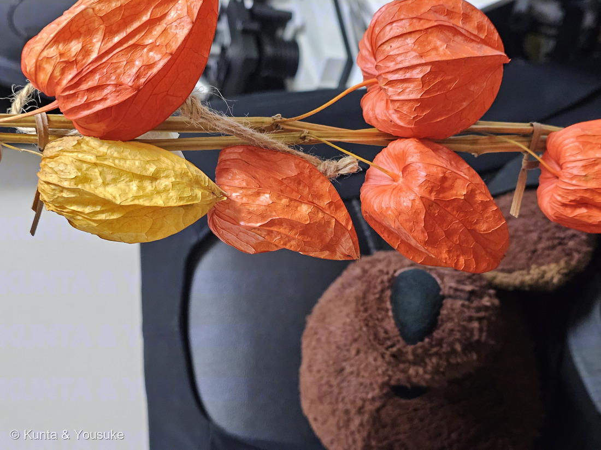

地図を読み込んでいるよ…
🔍 写真も地図も、押しているあいだ拡大して見られるよ（スマホは指を置いてすこし待ってね）。
🌍 の地図＝この子がもともと自生している場所を緑に。中国から朝鮮（POWOのvar. franchetiiの自生範囲）。三河も中国原産で、日本へは中国から外来した、としている。⚠日本原産（北海道・本州・四国）とする資料もあって食い違うので、地図は直接読めた出典に合わせた。
⭐中国から朝鮮にかけてが自生の範囲だよ（POWOの Alkekengi officinarum var. franchetii）。⚠⚠ふるさとが出典で食い違っているんだ。三河の植物観察は「帰化種 中国原産」「日本には中国から外来した」とし、POWOも var. franchetii の自生を「中国から朝鮮」とする。いっぽうWikipedia は「日本の北海道、本州、四国などを原産地とする」と書いている。⭐だから、直接読めて内容の一致した二つ（三河・POWO）に地図を合わせて、日本は塗らなかった。⚠お盆の飾りとして古くから身近にある子なので、日本に自生していないという意味ではない——「もともとどこの子か」の話だよ。⭐決めきれないときは、決めきれないと書く——162 ヤマシャクヤク・176 ミョウガと同じやり方だね。
⚠ 地図は国（日本と中国だけ県・省）までしか塗れないから、ほんとうの分布より広く見えていることがあるよ。地図はだいたいの場所。正確なところは、上の文を見てね。
ホオズキ（鬼灯・酸漿）
Alkekengi officinarum Moench var. franchetii (Mast.) R.J.Wang
別名 · カガチ／ヌカヅキ／アカカガチ（古名）／英 Chinese lantern, bladder cherry ／ 旧学名 · Physalis alkekengi L. var. franchetii ／ 見どころ · ⭐⭐あの提灯は、実の皮ではなく「萼（がく）」。花を支えていた小さながくが、花のあとで実を追い越すほど大きくなったもの
ナス科 · Solanaceae（ホオズキ属 Alkekengi・ナス目 Solanales）── この図鑑でナス科は10人目。001 トマト・119 ジャガイモ・107 ワルナスビたちの親戚
燻太さんの言葉「ホオズキは植物のなかでも特に変わっているよね。萼が一度閉じて果実を包むって、どういう仕組みなんだろう？ 細胞同士が接着するのかな？」……⭐この問い、まだ誰も答えきっていない問いだったよ（下の節に）。
名前と学名の由来 ── いちばんそれらしい名前を、手放した子
- ⭐⭐この子は最近、属が変わった。Kew の POWO では正名が Alkekengi officinarum になり、長く使われてきた Physalis alkekengi L. は「nom. rej.（廃棄された名）」とされている。⚠日本の資料はまだ Physalis で載っていることが多いので、両方おぼえておくのがいいよ。
- ⭐おもしろいのは、手放したほうの名前の意味なんだ。Physalis はギリシャ語の physa（ふくろ・膀胱）＝⭐まさに、このちょうちんのこと。──いちばんホオズキらしい名前を、ホオズキが名乗らなくなった、というねじれ方をしている。
- var. franchetii＝フランスの植物学者 Franchet への献名だよ。
- 和名「ホオズキ」の由来は諸説〔Wikipedia〕。①頬（ほお）＋つき（「顔つき」「目つき」の「つき」）／②ほほ＝火々で、赤く染まる意／③実を鳴らして遊ぶ子どもの様子から「頬突き」／④ホホ（カメムシの類）という虫がつくから。⚠どれも決め手はない。
- 漢字「鬼灯」＝⭐お盆に先祖が帰ってくるときの目印の、提灯に見立てたことから〔Wikipedia〕。「酸漿」は中国での呼び名〔Wikipedia〕。⚠ただし三河は中国名を「挂金灯（gua jin deng）」としている＝中国側にも複数の呼び名があるね。
この植物のこと
- ナス科ホオズキ属の多年草。高さ60〜80cm、⭐地下茎で横に広がる。花期は6〜7月〔三河〕。
- ⚠花は、意外なほど地味。白色（ほとんど帯緑色または帯黄色の目をもつ）、車形または鐘形、直径1.5〜2cm、浅裂する〔三河〕。──⭐ホオズキで人が見ているものは、ほとんど花じゃないんだ。
- 実（液果）は光沢のある橙赤色、球形、直径1〜1.5cm〔三河〕。⭐その実を、果時の萼がまるごと包む。
- ⭐お盆の飾り：萼に包まれた実を、死者の霊を導く提灯に見立てて、枝付きで精霊棚（盆棚）に飾る〔Wikipedia〕。⭐浅草寺のほおずき市は毎年7月9日・10日。約200年前の明和年間に始まったとされ、60万人の人出になるんだって〔Wikipedia〕。
- 子どもの遊び：中身を取り除いて口に含んで音を鳴らす、風船のようにふくらませる、ホオズキ人形をつくる〔Wikipedia〕。⚠下の毒の節も、かならず読んでね。
同定について
- 今回のはスーパーで売っていた、乾燥させた飾り用。麻ひもと乾いた稈で束ねてある加工品だよ。
- 合っている特徴：橙赤色／薄紙のような質感で光を通す／⭐網目状の葉脈がびっしり浮き出ている／⭐縦のうねが走る／⭐基部が陥没している（＝三河の「基部が陥没」そのまま）。⭐日本で観賞用に流通する「ほおずき」は、ふつうこの種。
- ⚠足りないもの：花・葉・茎・実を見ていない。⚠萼（それも乾いたもの）だけでの同定だよ。
- ⚠大きさを測っていない——ものさしが写っていないから。三河の記載は果時の萼で長さ2.5〜4cm×幅2〜3.5cm。⭐次に買うときは、ものさしと一緒に撮ろうね（009 オジギソウでカミソリの刃をならべたのと同じ手だよ）。
- ⚠束の中に1つだけ黄色い子がいる。熟しきる前の色なのか、染めたり脱色したりした加工なのかは、写真からは決められない。
⭐⭐ 燻太さんの問い ── 萼は「閉じた」のではなかった
燻太さんの質問はこうだった。
「萼が一度閉じて果実を包むって、どういう仕組みなんだろう？ 細胞同士が接着するのかな？」
⭐答えは「接着ではない」。でも——この問いは、いま世界の研究者がまだ答えきれていない問いに、まっすぐつながっていた。順番に見ていくね。
① そもそも、5枚の萼片は最初から一続きだった
- ナス科の萼は合着萼。三河の記載も⭐「咢筒（がくとう）」と「咢片（がくへん）」という言い方をしている＝筒の部分と、その先の裂片。つまり5枚の萼片は、つぼみのときから基部でつながった1枚の筒として作られるんだ。
- ⭐⭐だから「別々の5枚が、あとから閉じて、くっついた」のではない。──離れたことが、一度もない。
- ⭐写真①で確かめられることがある。ちょうちんには縦のうね（稜）が走っていて、三河は果時の萼を「10うね」と書く。⭐10は5の倍数。⚠ここからはぼくの読みだけれど——5枚それぞれの中央の筋（主脈）が5本＋萼片と萼片の“合わせ目”が5本＝10、と読むのが自然だと思う。写真の手前側だけで深い筋が5本ほど数えられて、一周で10本という記載と矛盾しない。
- ⭐「基部が陥没」も写真に写っている——茎がささる側が、へこんでいるね。
② では何が起きているのか＝「閉じる」のではなく「追い越す」
- 花のときの萼は小さい。⭐受粉のあと、萼が成長を再開する（＝accrescent／果時に大きくなる萼）。三河の属の解説にも、そのまま書いてある——「果時の咢は大きくなり、膨れ、果実全体を包み、膜質又は革質、5又は10本のうねをもち、基部はしばしば陥没する」。
- ⭐⭐中の実が育つより速く、外の袋が育つ。だから包みこまれる。──閉じたのではなく、追い越したんだ。
- この現象には名前がついているよ＝⭐ICS（Inflated Calyx Syndrome／膨らんだ萼症候群）。⭐ナス科のいくつかの系統で、別々に何度も進化した、いわゆる進化の新奇形質なんだ。
⚠⚠ ③ そして、しくみは まだ 分かっていない
- 長いあいだの定説（Physalis floridana での研究）＝MPF2 という MADS-box 転写因子が萼ではたらくことがICSの前提で、サイトカイニンとジベレリンが細胞を伸ばし、受精も重要、というものだった。
- ⚠⚠ところが2023年、CRISPRで確かめたら、ひっくり返った。別のホオズキ属 Physalis grisea（と P. pruinosa）をモデル系にした研究で——
- MPF2・MPF3をノックアウトしても、ちょうちんはふつうにできた（None of these homozygous mutants disrupted ICS）。
- AGクレード・SEP4クレード・Bクラスを含む11個のMADS-box遺伝子を試しても、どれも萼のふくらみを止められなかった（calyx inflation was unaffected）。
- 受精も必須ではなかった（ICS can be uncoupled from normal fertilization）。自家受粉できない変異体でも、萼はふくらんだ。
- ⭐この研究で見つかった遺伝子もある＝ちょうちんができない huskless（hu）変異体は、AP2様転写因子の遺伝子にたどりついた。⚠でもそれは「ふくらませるスイッチ」ではなかった——hu では萼と花びらが1つの層に混ざってしまう＝⭐そもそも萼を萼としてちゃんと作れないから、ちょうちんにならない、という話だったんだ（the loss of the inflated calyx in hu mutants is from a failure to properly specify sepal and petal identity）。
- 著者たち自身の言葉：⭐The mechanisms underlying ICS remain elusive（ICSのしくみは、いまだにつかめていない）。そして自分たちの結果は、探索の「リセットを迫る」ものだ、と書いている。
- ⚠⚠大事な但し書き：この2023年の実験は Physalis grisea で、うちのホオズキは（いまの分類では）別属の Alkekengi。⚠うちの子そのもので確かめられたわけじゃないよ。
⭐ だから、燻太さんの問いへの答え
「細胞同士が接着するのか？」→ ちがう。5枚は、はじめから一続きだった。
「じゃあ、何が袋をふくらませるのか？」→ ⭐それは、2023年の論文が「まだ分からない」と書いている。
⭐⭐燻太さんの問いは、まだ誰も答えきっていない問いだったよ。
🔬 うちの顕微鏡で、ためせること
- ⭐⭐萼の“合わせ目”を見る。もし本当に「はじめから一続き」なら、合わせ目のところにも、細胞がとぎれずに並んでいるはず。逆にあとからくっついたのなら、境目に細胞の並びの切れ目や、押しつけあった跡が残る。⭐どちらなのかは、表面を見るか、横断面を切れば分かる——009 オジギソウの葉枕を切ったときと同じやり方だね。
- ⭐葉脈標本（透かしホオズキ）にする＝水に漬けて薄い膜をゆっくり溶かすと、網目の脈だけが残る。⭐袋の骨組みが、まるごと見える。
- ⚠中を見ていない——乾燥品だけれど、実が残っているかどうか。
⭐ 「赤加賀智」── ヤマタノオロチの目の色
- 古事記のヤマタノオロチの場面に、こうある——「彼目如赤加賀智而、身一有八頭八尾」（その目は赤加賀智（あかかがち）のようで、ひとつの身に八つの頭と八つの尾があった）。
- ⭐そして古事記自身が、すぐ注をつけている——「此謂赤加賀知者、今酸醤者也」（ここで赤加賀智といっているのは、今のホオズキのことである）。
- ⭐⭐日本最古の書物が、わざわざ「今でいうホオズキだよ」と注釈している。千三百年前の人も、赤さを説明するのに、この実を持ちだしたんだね。
- ⭐135 ヒオウギと、ちょうど対になる。ヒオウギの黒い種は「ぬばたまの」＝黒の枕詞になった。──⭐黒を言うのにヒオウギ、赤を言うのにホオズキ。昔の人は、色を植物の名前で言ったんだ。
- ⭐099 ヒメガマ（因幡の白兎）と同じ古事記の草だよ。
⚠⚠ 食べられない ── 観賞用と食用は、別の植物
- ⚠観賞用のホオズキは有毒。ナス科なので全草に微量のアルカロイドがあり、とくに根と茎（生薬名＝酸漿根）にヒストニンが含まれる。⚠⚠子宮収縮作用があり、妊娠中の摂取は流産を誘発する〔Wikipedia〕。江戸時代には堕胎薬として使われたそうだよ。
- ⚠犬や猫にも危険。
- ⭐「食用ホオズキ」は別の種（Physalis pruinosa など・北アメリカ〜熱帯アメリカ原産）。ゴールデンベリーなどの名で売られている子だよ。⭐名前が同じでも、別の植物。
- ⚠今回のは飾り用の乾燥品。口に入れるものじゃないよ。
参考：三河の植物観察「ホオズキ」（咢筒と咢片／果時の咢は10うね・長さ2.5〜4cm×幅2〜3.5cm・基部が陥没／花は白色・車形又は鐘形・直径1.5〜2cm／液果は橙赤色・直径1〜1.5cm／帰化種 中国原産／属の解説＝果時の咢は大きくなり、膨れ、果実全体を包み、膜質又は革質、5又は10本のうねをもち、基部はしばしば陥没する）／Kew POWO「Alkekengi officinarum」（正名の変更・Physalis alkekengi は nom. rej.）／Wikipedia「ホオズキ」（和名の諸説・鬼灯の由来・ほおずき市・盆棚・毒性・子どもの遊び）。
ICS（膨らんだ萼）＝Establishing Physalis as a Solanaceae model system enables genetic reevaluation of the inflated calyx syndrome（The Plant Cell 35: 351, 2023）（MPF2/MPF3をふくむ11個のMADS-box遺伝子のCRISPR変異体でも萼のふくらみは止まらない／受精は必須でない／huskless は AP2様転写因子で、萼と花びらの区別ができないためにちょうちんにならない／しくみはいまだに不明）／Hormonal control of the inflated calyx syndrome（The Plant Journal, 2007）（従来説＝MPF2＋サイトカイニン・ジベレリン）。
古事記＝國學院大學 古典文化学事業「八俣の大蛇退治①」（彼目如赤加賀智而／此謂赤加賀知者、今酸醤者也）